APDA Rhode Island Chapter Event
2027 Rhode Island Parkinson’s Magic of Hope Gala & Auction
The chapter’s 3rd Annual Magic of Hope Gala & Auction — Friday, March 12, 2027 · Omni Providence, Providence.
Founded in 2014 in honor of Joseph Golomboski Sr. — walking in his memory since 2019.
Plain-language help for people living with Parkinson's — and for the family and caregivers who stand with them.
This page shares general information from American Parkinson Disease Association resources — it isn't medical advice. Questions about symptoms or treatment belong with your own doctor or neurologist.
On October 3, 2026, Team Golomboski took to the path for the Rhode Island Optimism Walk — and this community showed up in a big way.
Our team raised $7,273.75, passing our $7,000 goal and finishing at 103% of goal. Every dollar supports the APDA Rhode Island Chapter and the local families it serves.
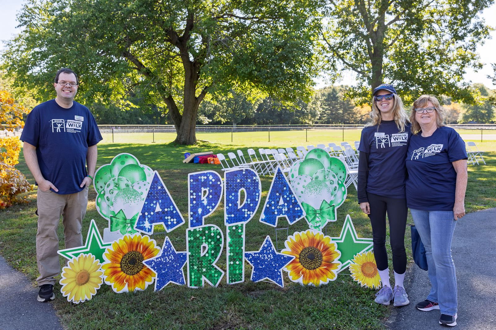
Our annual Concert for a Cure — a night of live music for APDA RI, with Joseph Sr.'s portrait watching over the show.
The first concert packed The Last Resort in Smithfield on April 26, 2026. Next date to be announced.
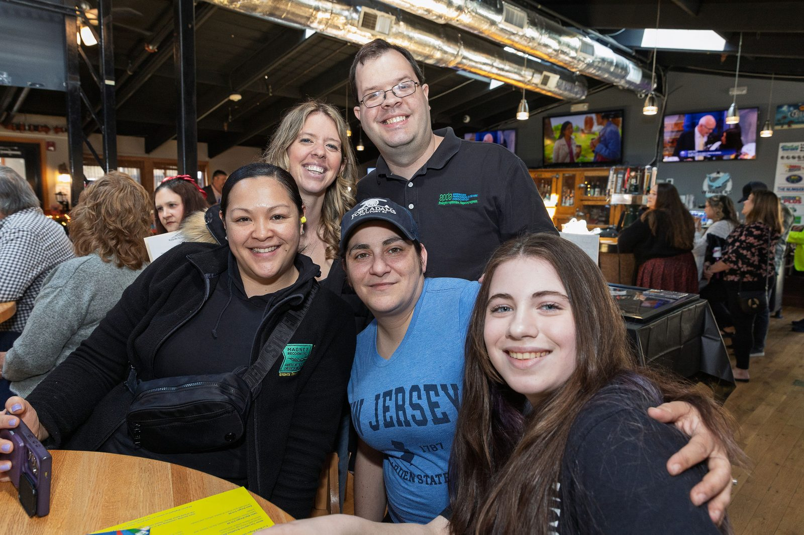
The chapter’s 3rd Annual Magic of Hope Gala & Auction — Friday, March 12, 2027 · Omni Providence, Providence.
Our trivia night fundraiser. Date to be announced
Our annual Concert for a Cure. Date to be announced
Our comedy night fundraiser. Date to be announced
Our bingo night fundraiser. Date to be announced
Date to be announced
Dates are still being set — leave your email and we’ll send a note when a date is announced. No newsletter, just event announcements.
The Basics
Parkinson's disease is a progressive condition of the brain and nervous system. It happens when brain cells that make dopamine — a chemical messenger that helps control movement — gradually break down.
As dopamine falls, movement slows and stiffens, and other symptoms can appear over time.
There is no cure yet, but there are treatments, therapies, and a community that helps people live well with it.
Parkinson's can start young. Doctors call it young onset when symptoms begin between ages 21 and 50 — about 10% of cases. Our dad, Joseph Golomboski Sr., was diagnosed at 44.
Most Parkinson's isn't inherited — only about 10% to 15% of cases trace to a known genetic mutation.
This page shares general information from American Parkinson Disease Association resources — it isn't medical advice. Questions about symptoms or treatment belong with your own doctor or neurologist.
If someone you love was just diagnosed, you don't have to figure this out alone.
Team Golomboski started as a family, but it was never only family. We are family, friends, colleagues, and neighbors who show up for each other — and there is always room for one more. Whether Parkinson's has touched your life directly or you simply refuse to let someone face it alone, you are welcome on this team. No one should battle Parkinson's on their own.
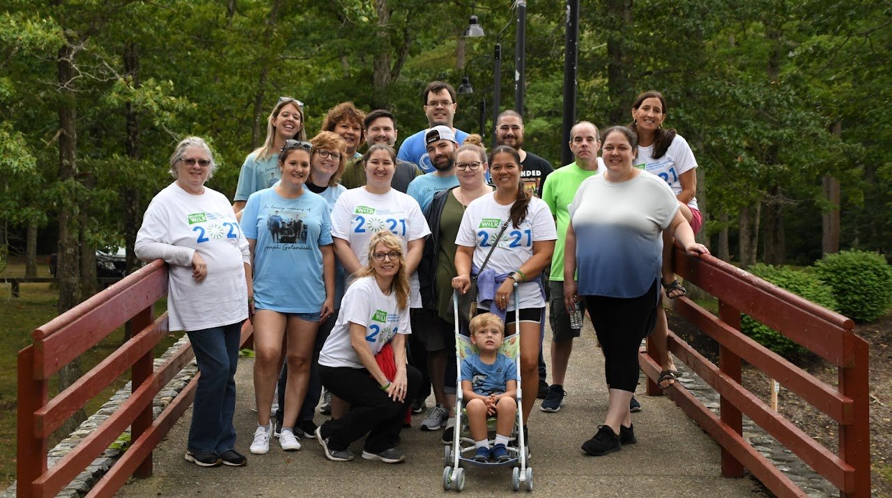
Donations through Team Golomboski go to the APDA RI Chapter — and stay to work right here in Rhode Island.
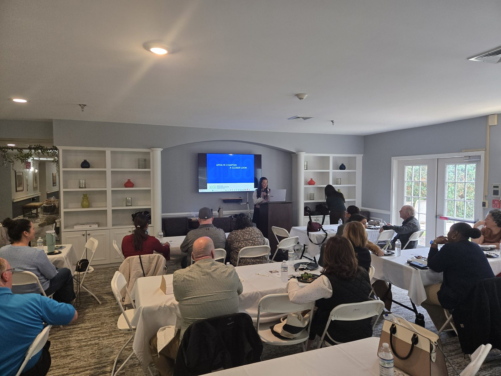
Support groups, education programs, and a local chapter families can call on — so no one in Rhode Island faces Parkinson's alone.
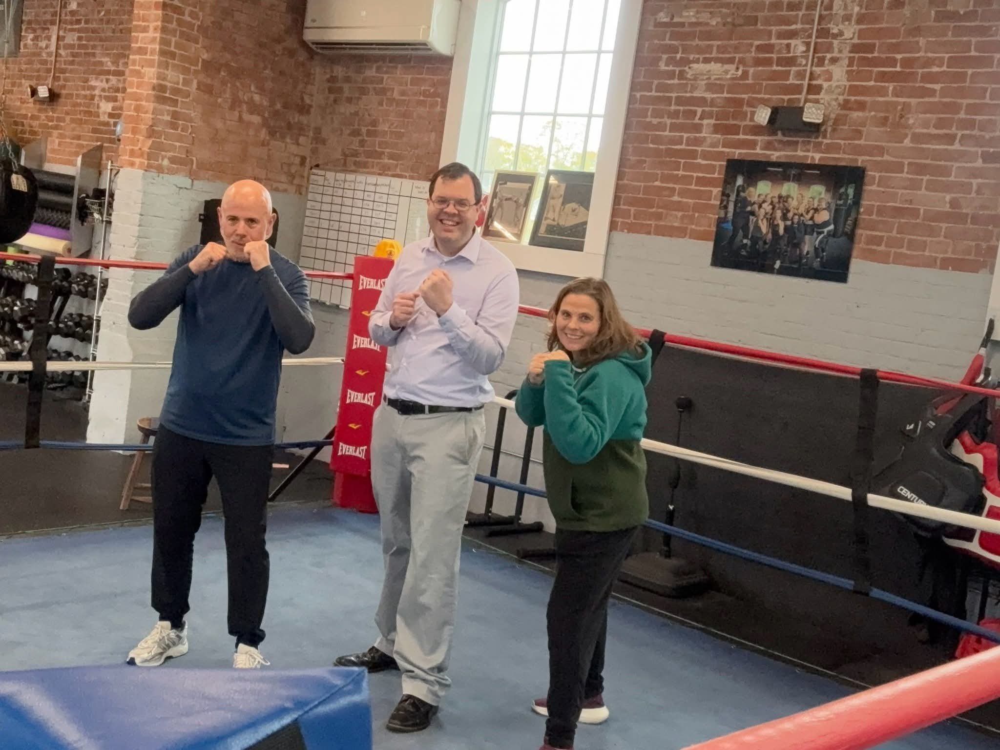
Movement is medicine. Your gift helps sustain programs like Rock Steady Boxing and yoga that help people with Parkinson's stay strong, mobile, and connected.
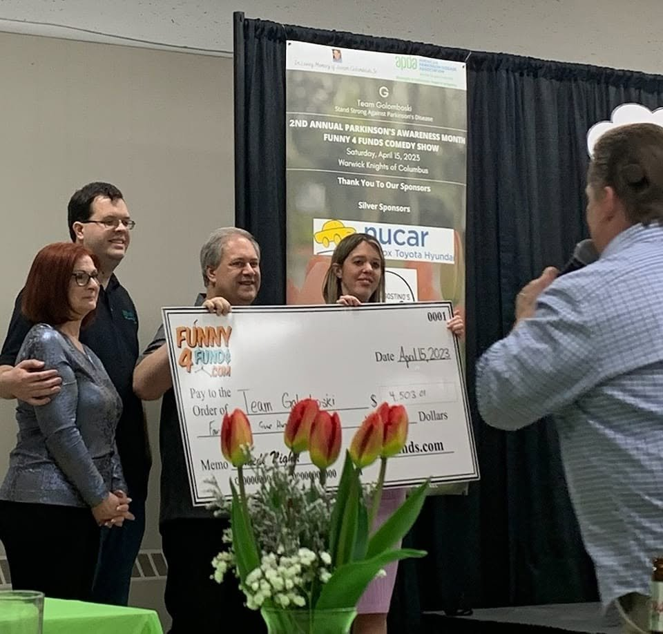
A share of every gift advances Parkinson's research — funding the science that brings better treatments, and one day a cure, within reach.
The family leadership behind Team Golomboski — and behind the APDA RI Chapter.
Team Captain · President, APDA RI Board of Directors
Team captain since the first walk in 2014, Joseph leads Team Golomboski's fundraising and serves as President of the APDA RI Chapter's Board of Directors.
Read more →Co-Founder · APDA RI Board Member
Co-founder of Team Golomboski and a member of the APDA RI Chapter's Board of Directors, Alicia has helped build the team from its first walk in 2014.
Read more →While we don't send a newsletter of our own, the APDA RI Chapter does — and it's a good one. Join their mailing list for Parkinson's news, program updates, and event announcements.
Get APDA RI Newsor write to us at teamgolomboski@gmail.com
In July 2024, the National Plan to End Parkinson's Act became federal law — the first law of its kind. It directs a coordinated national effort, led by the National Institutes of Health, to prevent, diagnose, treat, and ultimately cure Parkinson's, guided by a federal Advisory Council that seats people living with Parkinson's, family care partners, clinicians, and researchers alongside government officials.
The American Parkinson Disease Association is at the table: APDA partners Cathi Ann Thomas and Dr. David Standaert serve on the Council, as does APDA national board member Dr. Sara Whittingham, who lives with Parkinson's — and APDA has submitted its priorities for the plan.
The Council meets next on Monday, December 7, 2026, in a virtual meeting Rhode Island families can watch online from home.
“Families here feel Parkinson's at the kitchen table — in work missed, care given, and bills paid. A real national plan means faster research and real support for the people doing the caring. Team Golomboski will keep Rhode Island families posted on what this means for them.”
— Joseph Golomboski, Team Captain, Team Golomboski
Add your name: sign the Parkinson's community petition urging the Council to keep listening — a joint effort of APDA, The Michael J. Fox Foundation, and the Parkinson's Foundation.
Team Golomboski and the Rhode Island Parkinson's community, as covered by local and national outlets.
NBC 10 News (WJAR) · September 16, 2026. Barbara Morse reports on Cherry Hill Manor's remote Optimism Walk in Johnston and speaks with Joseph Golomboski about how the money raised stays in Rhode Island for local programs.
Read the article →The Rhode Island Wave · September 2023. Joseph Golomboski Jr. and Sandi McLeod talk about the Rhode Island Optimism Walk & 5K Fun Run in this Spotlight Series interview.
Watch the interview →Together for Sharon · July 2023. George Ackerman interviews Joseph about his father's early-onset diagnosis and founding Team Golomboski with Alicia in 2014.
Read the interview →Johnston Sun Rise · August 9, 2017. An early profile of the team as Alicia and Joseph Jr. led Team Golomboski into the September 2017 Optimism Walk at Goddard Park.
Read the article →See the full list of coverage on our In the News page →
Real people, right here in Rhode Island. If you're not sure where to start, start with a phone call.
Program Director, APDA Rhode Island
For Parkinson's resources, support groups, and local referrals.
Call 401-591-7890
Email ftobar@apdaparkinson.org
Executive Director, APDA Rhode Island
Reach Michelle through the APDA RI chapter office:
Chapter office: 401-439-8435
Chapter email: apdari@apdaparkinson.org
Medical Director, APDA Rhode Island
Chapter mailing address: APDA RI, PO Box 114098, North Providence, RI 02911
Regional Director
Regional Administrative Coordinator – Northeast Region
Team Golomboski thanks the volunteer board of the APDA RI Chapter, who give their time to Rhode Island families living with Parkinson's.
President
Treasurer
Secretary
Director
Director
Director
Director
Director
Director
Director
Director
Director
Director
Before there was a team, there was the Golomboski family — a dad, his children, and everyone who refused to let him face Parkinson's alone.
This is a family story before it is a team story. Before there was a team name, a tent, or a fundraising goal, there was the Golomboski family — Joseph P. Golomboski Sr., his children Alicia and Joseph Jr., their mom, Donna Harrison Lerch, his brother Anthony Golomboski — Uncle Tony to Alicia and Joseph Jr. — and Anthony's wife, Gayle Golomboski — Aunt Gayle — his sister Maria Francis — Aunt Maria to the family — and the family around them. Everything Team Golomboski has become started with them, at home, long before the first walk.
Then Parkinson's entered that family's life — early, and without asking. Joseph Sr. was diagnosed with early-onset Parkinson's at age 44. Forty-four is young. It is a time when most people expect many working years, family years, and ordinary days still ahead of them. Instead, the years that followed were lived with Parkinson's — and not by him alone. His children watched what the disease takes, year after year. The whole family learned how much has to be carried alongside the person who is ill: the appointments, the changes, the worry, and the love that has to get louder than all of it.
In 2014, Alicia and Joseph Jr. did something simple and stubborn with that love and worry: they founded Team Golomboski in honor of their father, who was living with Parkinson's disease. They put his name on the team — the family name — and invited other people to stand with them. The team walks and fundraises for the American Parkinson Disease Association Rhode Island Chapter, so that other Rhode Island families facing Parkinson's have programs, support, and a community to lean on — the kind of community they wanted around their own dad.
The walk began as a way to honor their father. What deepened it into a lasting commitment was the family's relationship with the APDA Rhode Island Chapter — and especially with Mary Ellen Thibodeau, the chapter's executive director at the time. As Joseph Sr.'s Parkinson's advanced, the family turned to the chapter for help, and Mary Ellen became their guide — the person who showed two teenagers, and later two young caregivers, that they were not carrying this alone.
The family's other constant was their father's neurologist, Dr. Joseph Friedman — the APDA Rhode Island Chapter's medical director, then and now. He cared for Joseph Sr. from diagnosis to the very end, and he was the doctor the family could always reach, with the latest on medications and research always at hand. That relationship did not end in 2019 — Joseph Jr. still counts Dr. Friedman as a trusted guide today.
The family rallied the way it always had — together. Their mom has been there from the start, and she remains one of Team Golomboski's strongest supporters. Joseph Sr.'s brother Anthony — Uncle Tony to Alicia and Joseph Jr. — stood with them on walk days. Family came first, and then the circle widened: friends, colleagues, neighbors, and community members from across Rhode Island joined in. One family standing up for one dad became a community standing up for every Rhode Island family living with this disease.
And in those first years, their dad was right there with them. Joseph Sr. was part of the team's walk days — front and center under the team tent at Optimism Walks, surrounded by the family, friends, and teammates who carried his name on their shirts. Look at the photos on this page. He is not off to the side. He is in the middle of it, with his children beside him. This team was never an idea in his honor from a distance. While he was living with Parkinson's, it walked alongside him.
He is not off to the side in these photos. He is in the middle of it — with his children beside him, and his name on every shirt around him.
Scenes from the 2014 Rhode Island Optimism Walk — Team Golomboski's first walk, the year Alicia and Joseph Jr. founded the team in their dad's honor.
Tap any photo to see it larger.
In the summer of 2019, as Joseph Sr.'s battle with Parkinson's was nearing its end, the family learned he would not make it to Joseph and Kirby's wedding, planned for August 10. So they brought the wedding to him. On July 14, 2019, Joseph and Kirby married at Cherry Hill Manor Nursing and Rehabilitation Center in Johnston, so his dad could be there.
Looking back on that day, Joseph said: “He was more alert than he had been in a while.” His dad was there for his wedding — and that is what the family holds onto from that day.
Then everything changed. Joseph Sr. passed away on August 9, 2019 — the day before the wedding date the family had originally planned. The words the family had used since 2014 had to change with him: “in honor of” became “in memory of.” Same name. Same family. One word different — and it said everything about what they had lost.
It would have been understandable to stop there — to let the team be something they had done while he was here. They didn't stop. Grief could have ended this story. In this family, it became the reason the story continued.
The team has never stopped walking. Since 2014, Team Golomboski has raised over $40,000 for APDA Rhode Island, and the walk around it has grown, too — in 2026, the Rhode Island Optimism Walk as a whole raised $193,430.95 for the chapter. Those are two different numbers, and both matter: the first is what this family team has raised in his name; the second is what the whole Rhode Island community raised together on walk day.
What began as a family effort now helps lead the chapter. Joseph Jr. serves as President of the APDA Rhode Island Chapter's Board of Directors, and Alicia serves alongside him on that board — the same brother and sister who started a walk team for their dad in 2014. And in 2026, the family started something new in his name: Rock the Resort, an annual Concert for a Cure, where Joseph Sr.'s portrait sits on a memorial table and watches over the show — the music, the crowd, and the cause he is the reason for.
Twelve years on, the heart of it has never changed: this is the Golomboski family honoring its dad — now joined by everyone who believes no one should face Parkinson's alone.
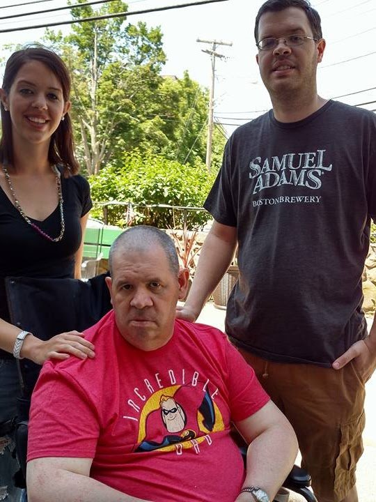
Diagnosed with early-onset Parkinson's disease at 44, Joseph Sr. faced the disease with the same strength his family now walks with. He passed away on August 9, 2019, at Cherry Hill Manor. Every step Team Golomboski takes is taken in his name.
What the photos on this page tell you — and what his family wants you to know — is that he showed up. He was at the walks. He was under the team tent, front and center, with Alicia and Joseph Jr. holding the frame around him and the team gathered behind him. The team that carried his name did not carry it without him; for its first years, it carried it with him, walk after walk. When visitors see him in these pictures, right in the middle of the crowd, they are seeing the team exactly as it began.
Joseph Sr. passed away on August 9, 2019. Since that day, Team Golomboski has walked in his memory — and that word, memory, is active for this family. It is not a plaque they walk past once a year. It is the reason the team still sets a goal, still asks neighbors and sponsors to give, and still shows up on walk day every year.
He is still present at everything the team does. At Rock the Resort, the annual Concert for a Cure the team founded in 2026, his portrait sits on a memorial table and watches over the night — the music, the crowd, and the cause he is the reason for. His name is on the team itself, so every dollar raised carries his name with it: over $40,000 raised for APDA Rhode Island since 2014, every bit of it in honor of him first, and in his memory now.
If you have come to this page because Parkinson's has touched your family, this is the invitation his children built out of their own story: you do not have to face it on your own. They didn't, because he didn't — he had a family and then a whole team around him. That is what they are still trying to give to other Rhode Island families, in his name.
Before Parkinson's, there was the life he built. Joseph P. Golomboski Sr. was a Rhode Island College graduate who worked for the Johnston School Department and belonged to Laborers Local 808. He loved fishing and was an avid Boston sports fan. He enjoyed attending Alicia's dance recitals, and some of Joseph Jr.'s favorite memories are of watching and attending pro wrestling and WWE shows at his side.
Joseph Sr. was diagnosed with early-onset Parkinson's at 44, when Alicia and Joseph Jr. were still teenagers. For years he lived on his own in his apartment, determined to stay independent. The disease took that independence piece by piece — first driving, when it was no longer safe and the keys had to be taken away; then living alone, as he moved into assisted living. After that came a series of nursing homes across Rhode Island, until he reached his final home, Cherry Hill Manor in Johnston — the same place where his family would later gather around him for Joseph and Kirby's wedding, and where he spent his final days.
Through those first years, Alicia and Joseph Jr. still got to live a normal teenage life — because their aunt and uncle took on being their dad's caregivers, carrying the daily weight of his care. It wasn't until the two reached their late teens and early twenties that the responsibility became theirs: managing his medications, getting him to doctors' appointments, and making the everyday decisions his care required.
There was no one their own age for them to talk to back then. Today there is — APDA runs a free virtual support group for teenagers whose parent lives with young-onset Parkinson's: the group Joseph Jr. and Alicia never had. It's listed among APDA Rhode Island's programs for families.
The walk carries more than one name. Joseph Sr.'s mother, Teresa Golomboski, passed away in July 2017, weeks before that year's Optimism Walk — the team walked in her memory too, and her family directed memorial donations to the APDA Rhode Island Chapter.
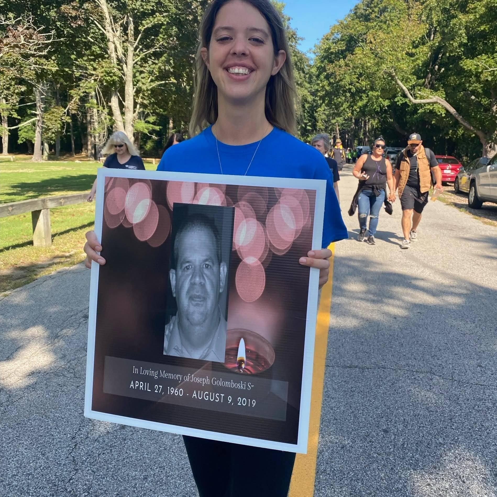
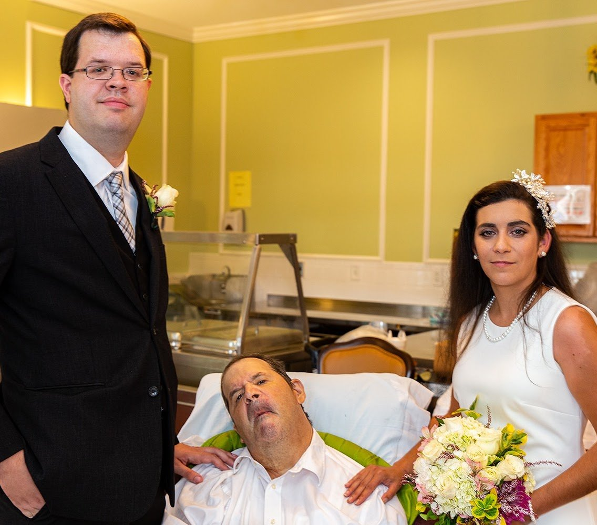
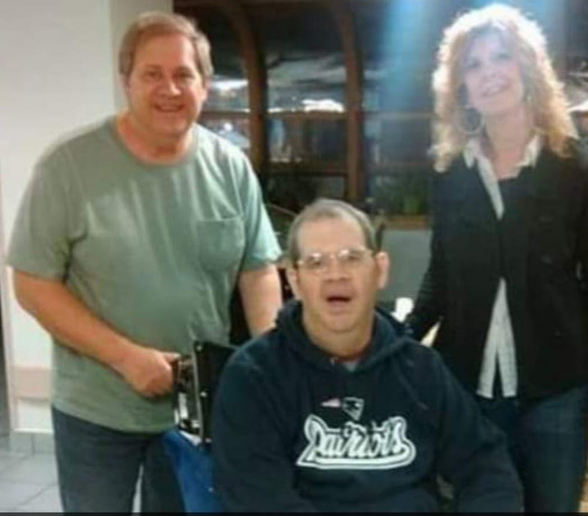
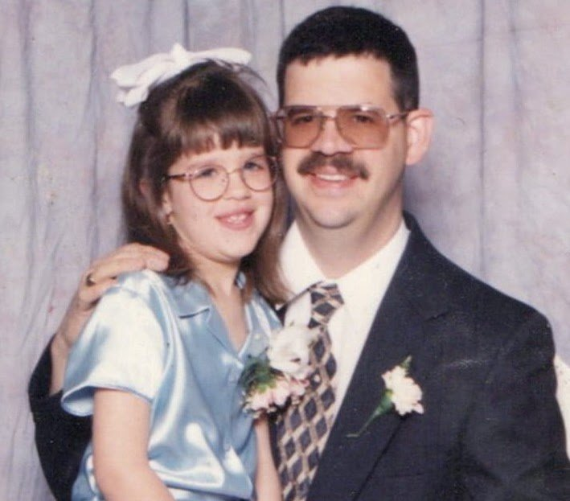
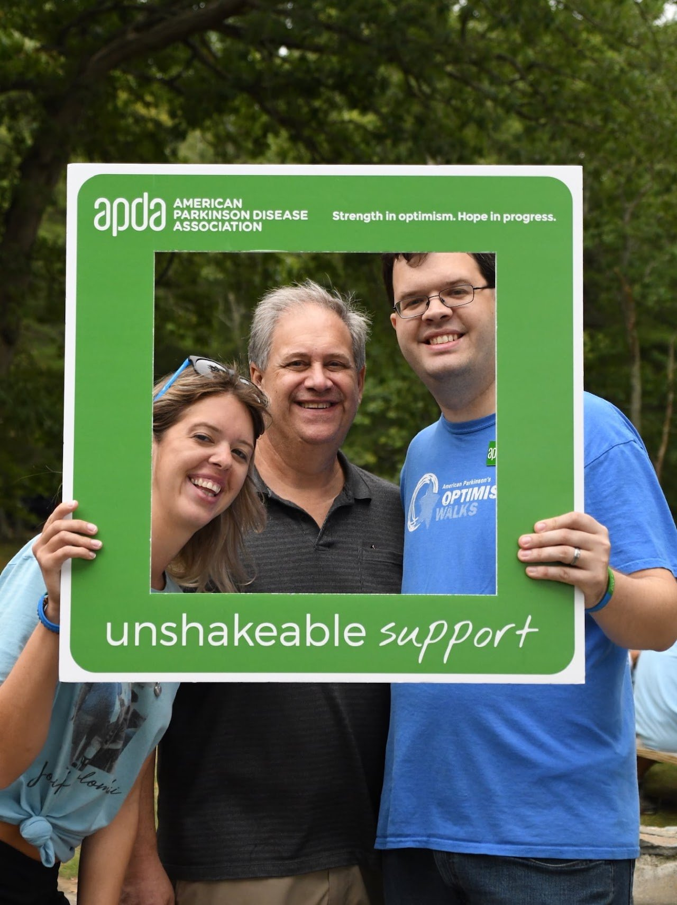
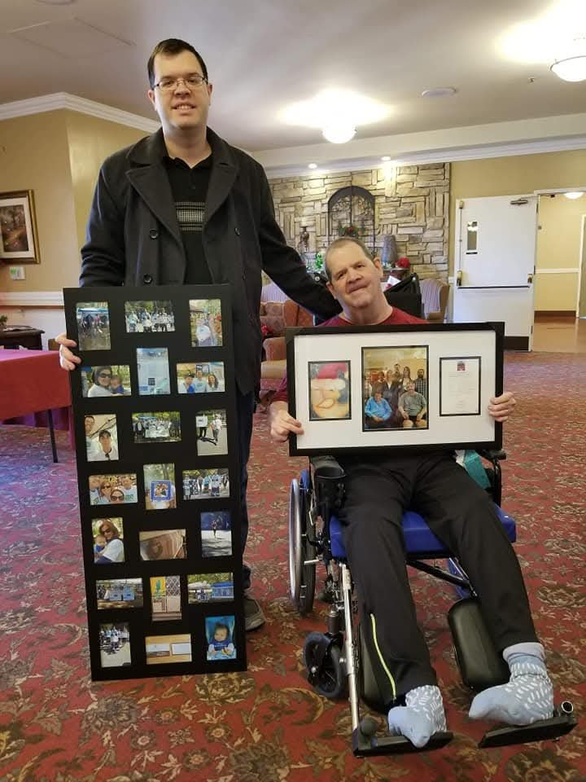
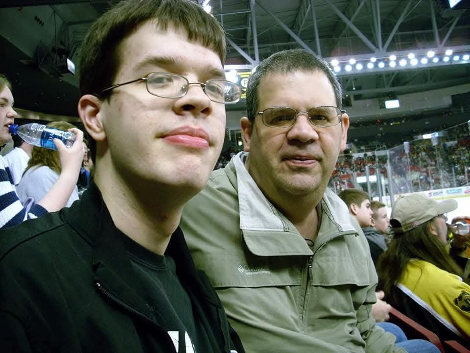
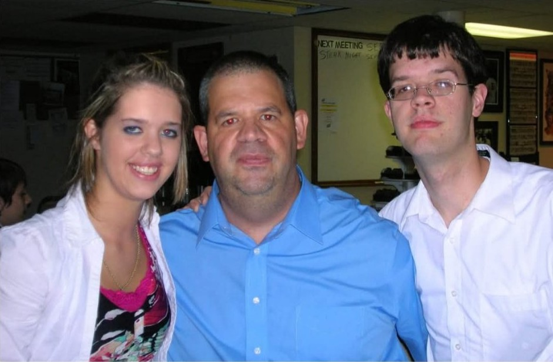
This was never just two people, and it still isn't. The Golomboski family that rallied around Joseph Sr. is the same family carrying his name forward today — every generation of it.
Alicia and Joseph Jr. started it, and they still lead it — as co-founders, as board members, and as a brother and sister who made a promise to their dad and kept it. Their mom is still right there with them, one of Team Golomboski's strongest supporters, at the walks her husband's name is carried through. Anthony Golomboski — Uncle Tony, Joseph Sr.'s brother — and his wife, Gayle Golomboski — Aunt Gayle — have stood with the team on walk days — a brother honoring a brother, with family beside him. And Joseph Sr.'s sister, Maria Francis — Aunt Maria — is part of that family presence, too — standing with them as they carry his name forward.
The family has grown since Joseph Sr.'s walk days, and the new faces show up for him, too. Joseph Jr.'s wife, Kirby, stands with the team at its events, including Rock the Resort. And at that same concert in 2026, Joseph Jr.'s niece Oliva was there with the family — the next generation, already showing up, already part of how this family remembers him. That is the point of the photos below: not a team posing, but a family — his family — still gathered around his name.
Read his story and you will feel the loss in it. Stay with it to the end and you will see the other half: a family that turned that loss into over $40,000 raised, a chapter led by his own children, a walk that brings Rhode Island together, and a concert where his portrait still watches over the room. That is worth celebrating — because he would have recognized every bit of it. It looks exactly like his family.
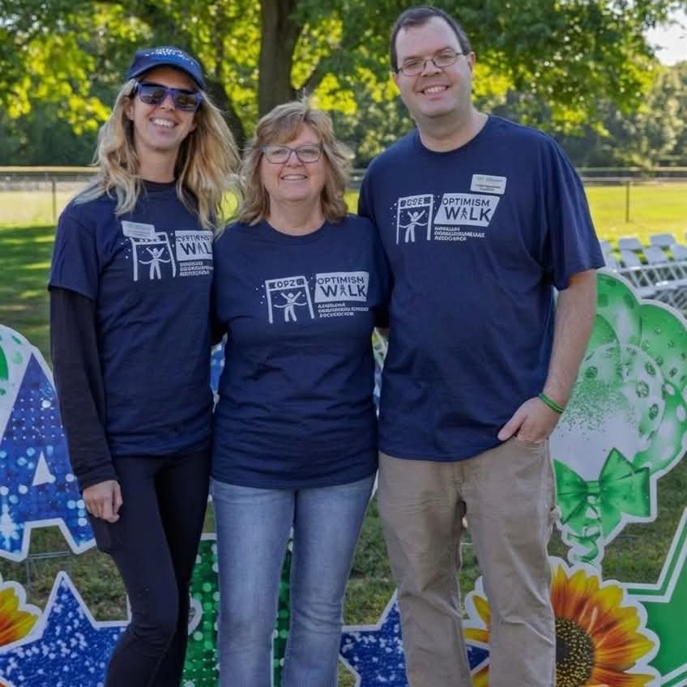
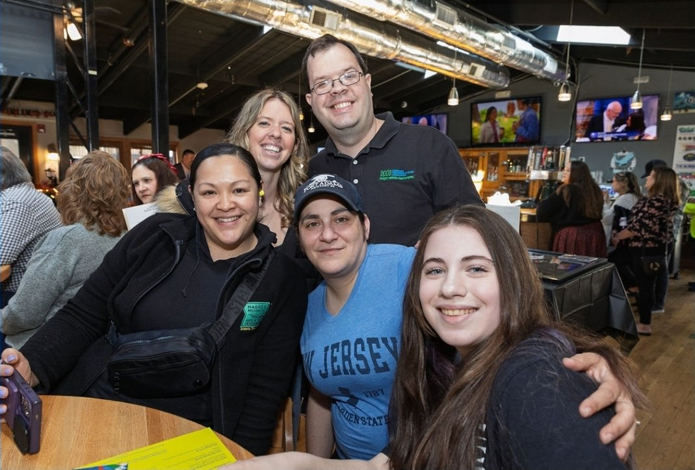
Five values have carried this team from its first walk in 2014 to today.
Where this team started — the whole Golomboski family walking for its dad — and still who we are, in every generation.
Parkinson's touches whole families. We show up for all of them, not just on walk day.
Rhode Island is small and mighty. Our neighbors, sponsors, and volunteers make every result possible.
Twelve years in, we are still walking — because the need hasn't gone away, and neither have we.
Concerts, comedy nights, and community drives — if it brings people together for the cause, we'll try it.
Alicia and Joseph Jr. founded the team for their dad — backed by their whole family, they now help lead the APDA Rhode Island Chapter itself.
Team Captain · Walk Committee Chair · President, APDA RI Board of Directors
Joseph co-founded Team Golomboski in 2014 and captains the team today. He has chaired the Rhode Island Optimism Walk committee since 2021 and serves as President of the APDA Rhode Island Chapter's Board of Directors since September 2024.
Co-Founder · APDA RI Board Member
Alicia co-founded Team Golomboski with her brother in 2014 to honor their father, Joseph Sr. She serves on the APDA Rhode Island Chapter's Board of Directors and helps lead the team's fundraising year after year.
Every gift to APDA Rhode Island honors Joseph Sr. and helps a Rhode Island family living with Parkinson's today.
Donate to APDA Rhode IslandNo one should battle Parkinson's on their own — join us.
This wall belongs to everyone who knew Joseph Sr. — and to everyone walking for someone they love. Share a memory of him, or tell us who you walk for, and the family will add it here.
Messages are reviewed by the family before they appear.
Share the first memory.
Siblings who turned their father's diagnosis into more than a decade of service — building a fundraising team, leading community events, and helping guide the APDA Rhode Island Chapter.
Joseph Golomboski Jr. and Alicia Golomboski co-founded Team Golomboski in 2014 in honor of their father, Joseph P. Golomboski Sr. (1960–2019), who was diagnosed with early-onset Parkinson's disease at age 44 and passed away on August 9, 2019.
What began as a family walk team has grown through consistency and community. Year after year, Joseph and Alicia have walked, fundraised, and invited neighbors, friends, sponsors, and local businesses to stand with Rhode Island families living with Parkinson's. Since 2014, Team Golomboski has raised over $40,000 for APDA RI — including $7,273.75 in 2026, 103% of the team's $7,000 goal. The team has grown beyond family to include friends, colleagues, and community members — and everyone is welcome to join.
Together, they have helped shape a calendar of events that brings people together for the cause throughout the year — not only on walk day, but in concert halls, comedy rooms, and neighborhoods across the state.
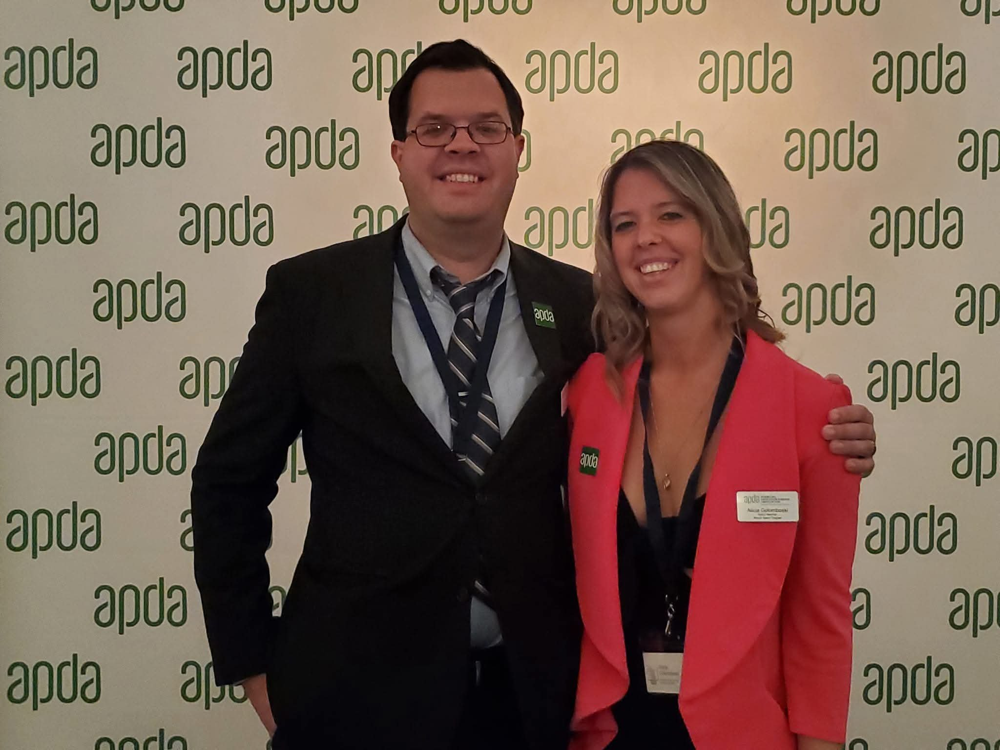
In 2020, as Rhode Island faced the early months of the pandemic, Joseph and Alicia extended Team Golomboski's giving beyond Parkinson's programs to neighbors in need. That spring and summer, the team donated $113.30 to the Rhode Island Community Food Bank (April 2020), delivered 8 extra-large pizzas to the staff at Cherry Hill Manor (April 2020) — the care community where their father spent his final days — and donated to the Potter League for Animals (July 2020).
That same instinct — to show up where help is needed — has defined their work together from the beginning.
From volunteer to chapter president — a record of steady, hands-on leadership.
Team Captain · President, APDA Rhode Island Chapter Board of Directors
Joseph Golomboski Jr. co-founded Team Golomboski in 2014 and serves as its Team Captain. His involvement with the APDA RI Chapter began as a volunteer from 2014 to 2020 — walking, fundraising, and supporting chapter events year after year.
In 2020, he joined the chapter's Board of Directors. He went on to serve as Board Secretary, then as Vice President, before being elected President of the APDA RI Chapter Board of Directors in September 2024 — a role he continues to hold today.
Since 2021, Joseph has served as Chair of the Rhode Island Optimism Walk Committee. In that role, he helps lead the chapter's signature event. He helped lead the 2026 Rhode Island Optimism Walk & 5K on October 3, 2026, which raised $193,430.95 for APDA RI.
Beyond the walk, Joseph chairs and helps lead Team Golomboski's own events, including Rock the Resort: Concert for a Cure and the team's Funny 4 Funds fundraisers, and he represents APDA RI at community events across the state — speaking with families, partners, and supporters about local programs and support.
His leadership is defined by continuity: the same volunteer who walked in 2014 now leads the board, chairs the walk, and captains the team his family founded in his father's honor.
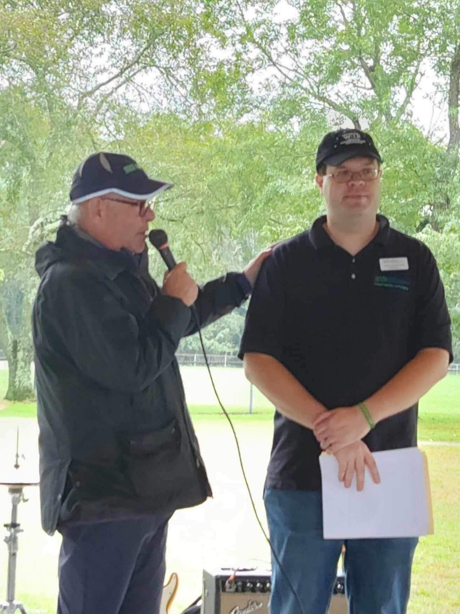
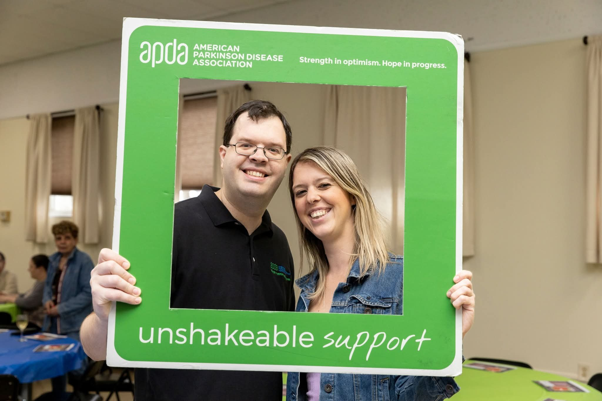
New England Revolution
Honored on-field at Gillette Stadium for outstanding contributions to the Rhode Island community, specifically recognizing leadership in Parkinson's Disease advocacy and the impact of the APDA RI Chapter.
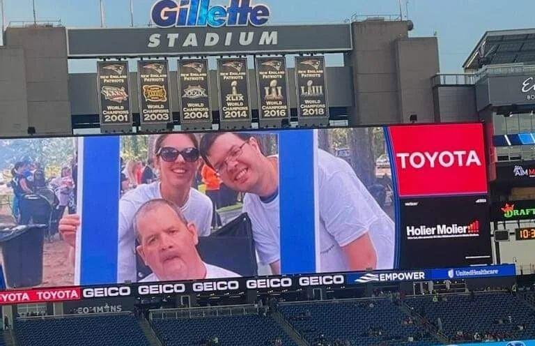
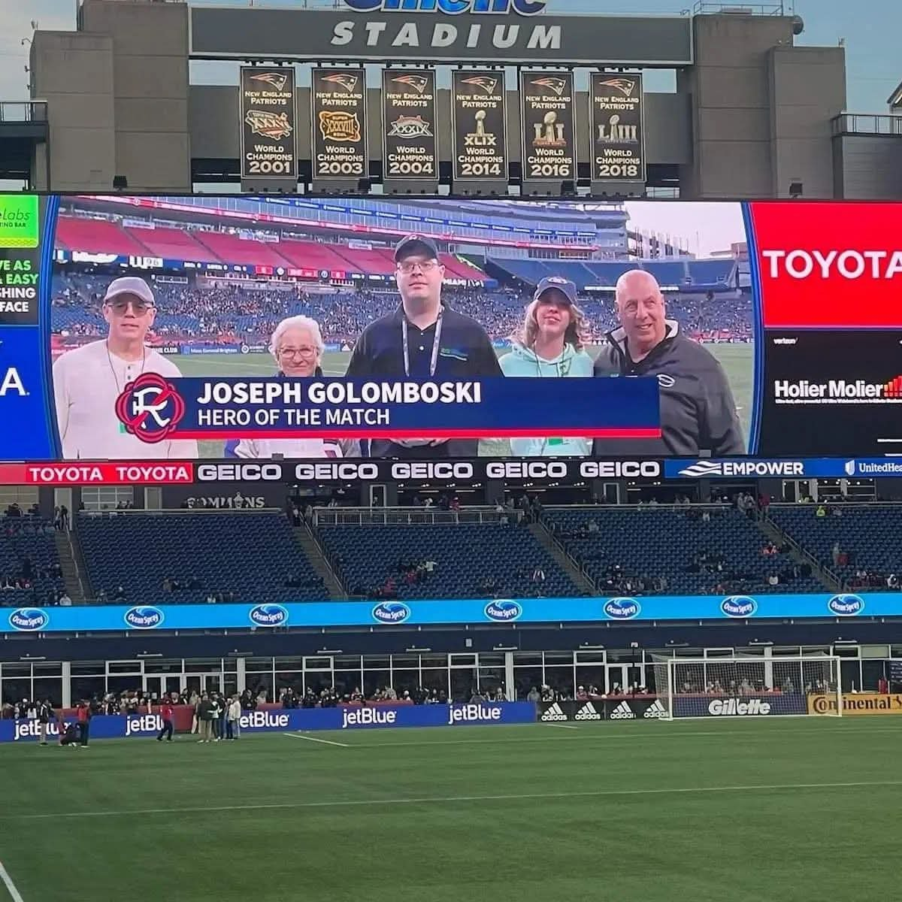
Honey Dew Donuts · December 2021
Selected as a Top 10 Finalist in a region-wide search for local heroes making a positive difference.
Co-founder and board member — a constant presence since the first walk.
Co-Founder · Board Member, APDA Rhode Island Chapter
Alicia Golomboski co-founded Team Golomboski in 2014 with her brother Joseph, in honor of their father, Joseph P. Golomboski Sr. From the team's first walk, she has been central to its identity as a family-led effort rooted in memory, commitment, and community.
Alicia has walked and fundraised with the team every year since 2014, helping build the relationships with donors, sponsors, walkers, and volunteers that have carried Team Golomboski past $40,000 raised for APDA RI.
She serves as a Member of the Board of Directors of the APDA RI Chapter, bringing the perspective of a co-founder and longtime walk participant to the chapter's leadership.
Alicia shares in the full life of the team — the annual Rhode Island Optimism Walk, Funny 4 Funds fundraisers, and Rock the Resort: Concert for a Cure — and in the quieter work between events that keeps a community team strong year after year.
Contact the team: teamgolomboski@gmail.com · (401) 258-4957
Invite Joseph to speak about Parkinson's advocacy and community fundraising: teamgolomboski@gmail.com
Joseph brings the caregiver’s journey and a decade of community fundraising to rooms across Rhode Island.
Joseph speaks to caregiver and support groups, senior centers, healthcare and community organizations, and civic groups — and with employers and senior living communities about real-life caregiving, keeping dignity at work, and how teams can support families living with Parkinson’s.
Invite Joseph to speak: teamgolomboski@gmail.com · (401) 258-4957
A family team that started in 2014 is now one of Rhode Island’s most consistent voices for Parkinson’s families — $40,000+ raised, a record year in 2026, and a door that’s wide open for the next person to walk through it.
Walk with us, sponsor an event, or give — every way in helps a Rhode Island family living with Parkinson’s today.
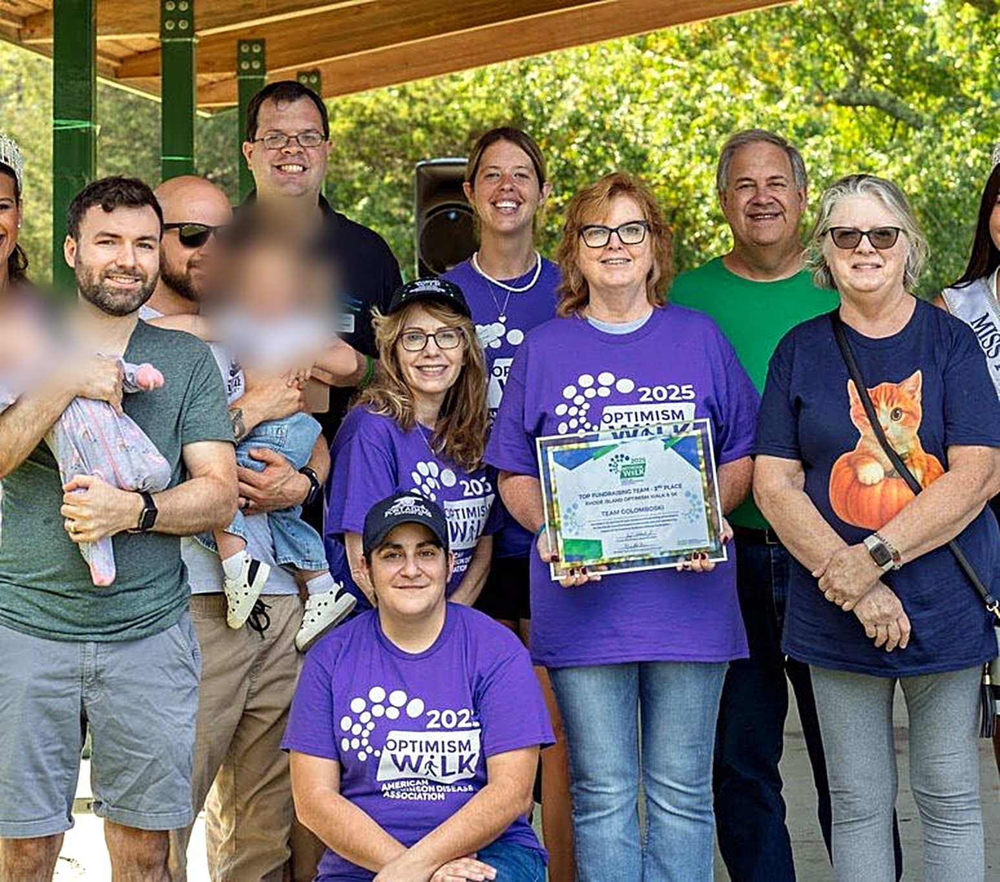
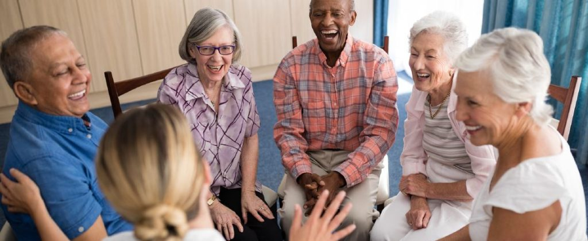
Free groups for people with Parkinson’s and their care partners, including one for teens and one just for care partners, so no family faces this alone.
Rock Steady Boxing, dance, yoga, and other Parkinson’s classes across the state that help people fight back.
Chapter programs like the annual symposium, where specialists and hundreds of Rhode Island families learn together.
Because support today matters, and a cure matters more.
Every dollar Team Golomboski raises goes to the APDA RI Chapter.
For the 2026 Rhode Island Optimism Walk, Team Golomboski set a goal of $7,000 — and this community pushed past it. The team finished with $7,273.75, or 103% of goal.
Team Golomboski was part of something even bigger: the full 2026 Rhode Island Optimism Walk raised $193,430.95 for APDA RI — proof of what this state does when it shows up together.
We started walking for one person. We keep walking for every Rhode Island family living with Parkinson’s today.
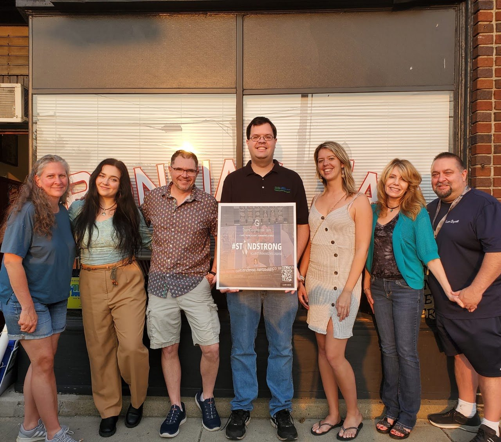
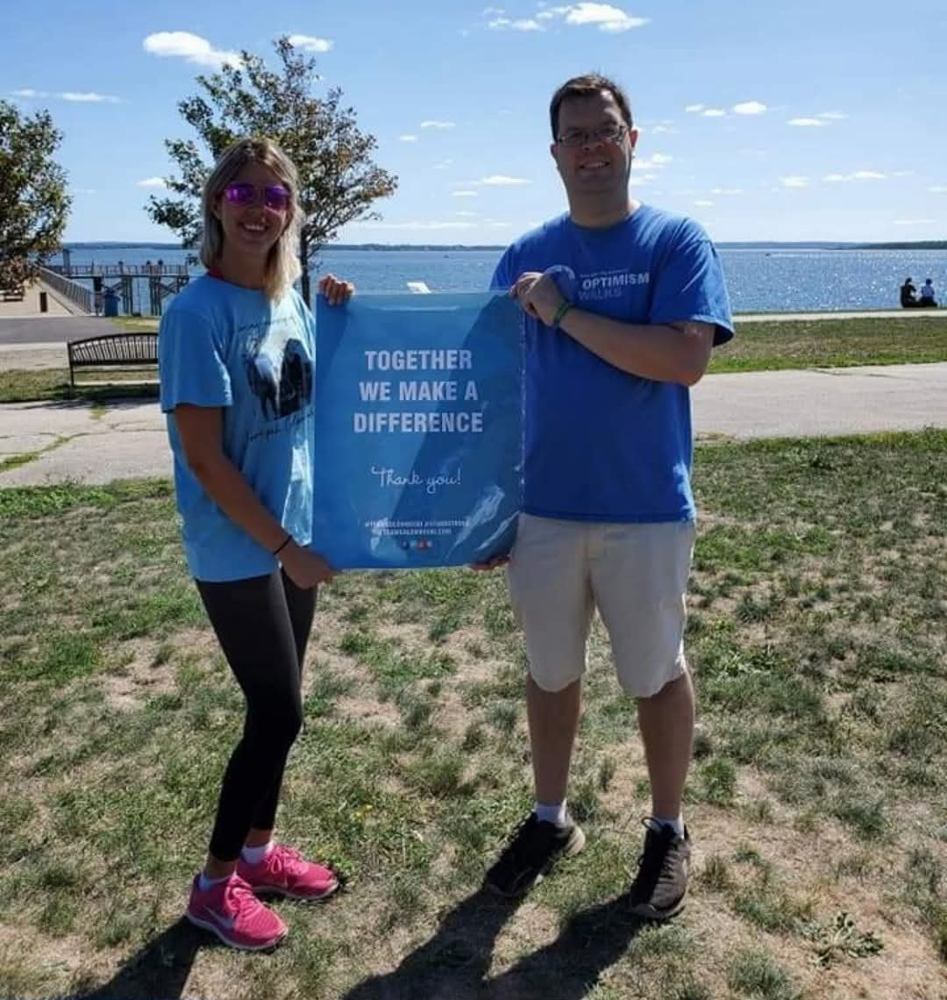
Local businesses make this work possible — and get seen by a loyal, local community that remembers who showed up.
When you sponsor Team Golomboski, you’re not buying a logo slot. You’re standing with Rhode Island families at the Optimism Walk, Rock the Resort, Funny 4 Funds, and community nights all year — and this community notices.
Rock the Resort 2026 — Concert for a Cure sponsors.
Supported Team Golomboski and don’t see your name yet? Write to teamgolomboski@gmail.com and we’ll add you right away. Sponsors listed here are businesses that supported Team Golomboski events directly.
Team Golomboski started as a family — it was never only family. Here’s who leads it, and how you join.
Team Captain · Walk Committee Chair · President, APDA RI Board of Directors
Joseph captains Team Golomboski, chairs the Rhode Island Optimism Walk committee, and serves as President of the APDA RI Chapter’s Board of Directors.
Co-Founder · APDA RI Board Member
Alicia co-founded the team in 2014 and serves on the APDA RI Chapter’s Board of Directors — building the donor, sponsor, and volunteer relationships behind every result on this page.
Join Team Golomboski at the next Rhode Island Optimism Walk — walk, run, or cheer. Families, friends, and first-timers are all welcome.
Join the TeamHelp at an event, lend a skill, or join the walk-day crew. A few hours from you becomes a day a family never forgets.
Volunteer With UsPut your business behind a trusted local cause — or make a personal gift that stays in Rhode Island and goes straight to work.
Become a SponsorDonor Recognition
Our highest thanks for the donors whose generosity leads the way. Donors who give $1,000 or more in support of Team Golomboski are recognized here by name — because leadership like that deserves to be seen, and to inspire the next gift.
$1,000+ · Circle of OptimismThank you to every donor, at every level, who made 2026 possible. The 2026 Circle names are being confirmed and will be listed here.
The first $40,000 took twelve years and hundreds of neighbors, sponsors, and friends. The next chapter starts with one yes — yours. Join the team, sponsor an event, or give today, and a Rhode Island family feels it.
A look back at the walks, concerts, and community nights this team has shared — and the people who made each one happen.
Some events are run by the APDA Rhode Island Chapter. Others are run by Team Golomboski to benefit the chapter — each event is labeled so you know which is which.
Dates are still being set — leave your email and we’ll send a note when a date is announced. No newsletter, just event announcements.
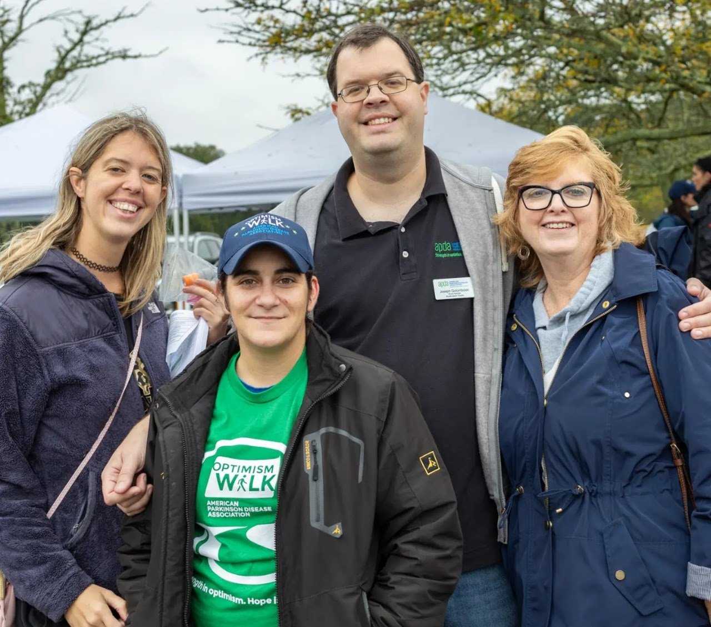
No events match those filters — try clearing one.
The APDA RI Chapter’s 3rd Annual Magic of Hope Gala & Auction — an evening of cocktails, dinner, and live and silent auctions in downtown Providence. Join us at the Omni Providence, 1 West Exchange Street, on Friday, March 12, 2027. Cocktail hour begins at 6:00 PM. Black-tie optional.
Our trivia night fundraiser. Date to be announced
Our annual Concert for a Cure. Date to be announced
Our comedy night fundraiser. Date to be announced
Our bingo night fundraiser. Date to be announced
Date to be announced
An APDA RI Chapter golf tournament held each spring. Date to be announced.
Each April, the chapter marks Parkinson’s Awareness Month with special events across Rhode Island. Details to be announced.
Team Golomboski's biggest walk yet. The team raised $7,273.75, finishing at 103% of its $7,000 goal for the APDA RI Chapter.
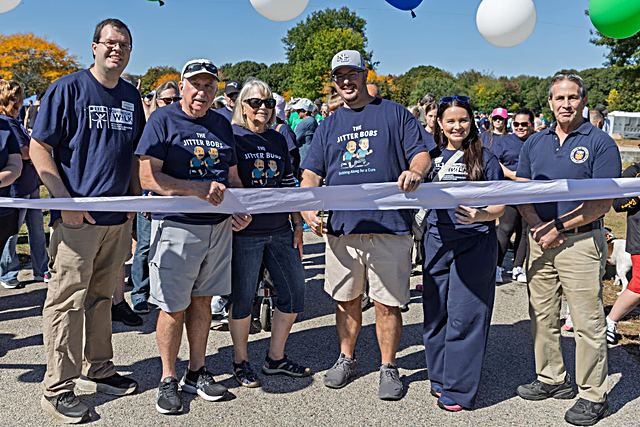
Team Golomboski raised $7,273.75 — 103% of its $7,000 goal.
103% of the $7,000 goal.
Team Golomboski raised $7,273.75, which is 103 percent of its $7,000 goal. The goal was exceeded.The 2026 walk raised $193,430.95 for APDA RI.
Thank you to every donor who gave, every sponsor who stood with us, and every volunteer and walker who gave their time — this result belongs to all of you.
A night of live music in support of the Parkinson's community, hosted at The Last Resort — proof that a fundraiser can sound as good as it feels.
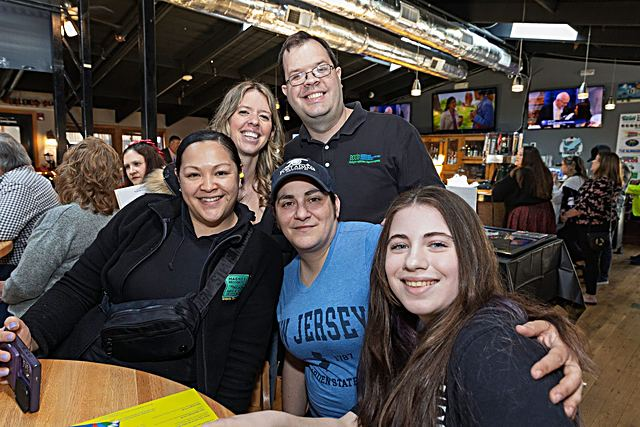
Thank you to the performers, to Stephen Donovan for hosting the night, and to every sponsor and supporter who helped make the concert happen.
Team Golomboski has also raised support the funny way — a Funny 4 Funds comedy fundraiser, turning a night of laughs into help for Rhode Island families living with Parkinson's. Thank you to everyone who came out and laughed for the cause.
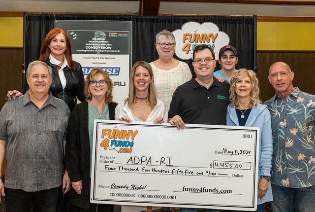
Video recaps from Team Golomboski's earlier Optimism Walk years.
Recap videos exist for the 2014–2021 walk seasons. Read how it all started on our Our Story page.
Every event starts with people willing to show up. Your gift today helps power the next walk, the next concert, and the programs in between.
Donate to APDA RIIf you would like to host a fundraiser to help benefit the APDA RI Chapter and Team Golomboski, please let us know.
Start the ConversationSponsor the Rhode Island Optimism Walk, Rock the Resort, or one of our community events — and stand with Rhode Island families living with Parkinson's.
Become a SponsorWe love to network. Set up a meeting with Joseph and the Team Golomboski crew — coffee, a call, or a visit to your organization.
Schedule a MeetingSee photos from past events in our Photo Galleries →
Concert for a Cure — a night of live music at The Last Resort, and now an annual Team Golomboski tradition.
Team Golomboski EventRock the Resort: Concert for a Cure is Team Golomboski's benefit concert at The Last Resort — live music, good company, and a community coming together for Rhode Island families living with Parkinson's disease.
The first concert went so well that it's now an annual event — one night every year when this community trades walk shoes for dancing shoes, all in support of the APDA Rhode Island Chapter.
Rock the Resort is now a yearly tradition — a night this community can look forward to every year. It carries the same spirit as walk day: neighbors, music, and showing up for Rhode Island families living with Parkinson's.
Each year's concert supports the same mission as everything Team Golomboski does — funding the APDA RI Chapter's local programs, support services, and research toward a cure.
The date for the next Rock the Resort hasn't been set yet. Concert announcements will be posted here and shared through APDA RI Chapter news — sign up with APDA RI to hear as soon as the date is announced.
Rock the Resort is now an annual tradition — and your business can help bring the next one to the stage.
Partnering with Rock the Resort puts your business in front of hundreds of local music fans while supporting the APDA RI Chapter — a great night of music that does real good close to home.
Net proceeds from the concert benefit support groups, research, and wellness programs for Rhode Island families living with Parkinson's disease.
The first-ever Rock the Resort took place on April 26, 2026 at The Last Resort — a night of live music in support of the Parkinson's community.
21 Guns Band RI headlined the night, with Project Alice and Rudy D'Agostino also taking the stage, and Stephen Donovan hosting as emcee.
Thank you to the performers, to Stephen Donovan for hosting the night, and to every sponsor and supporter who helped make the first concert happen.
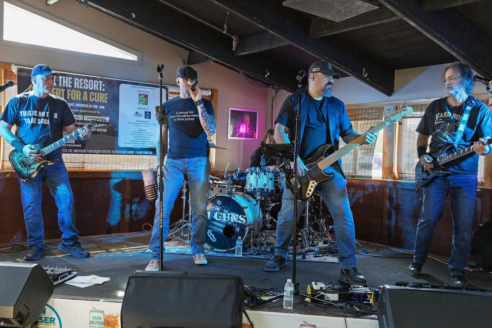
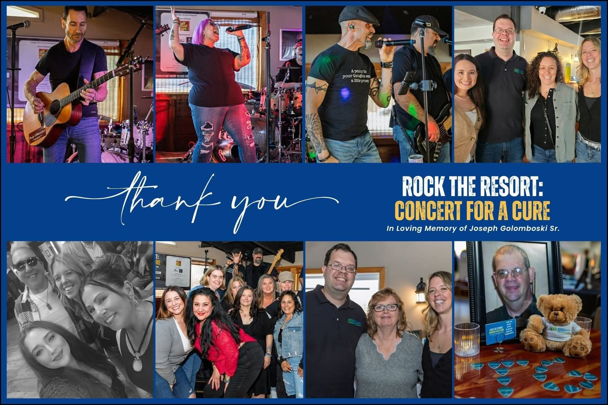
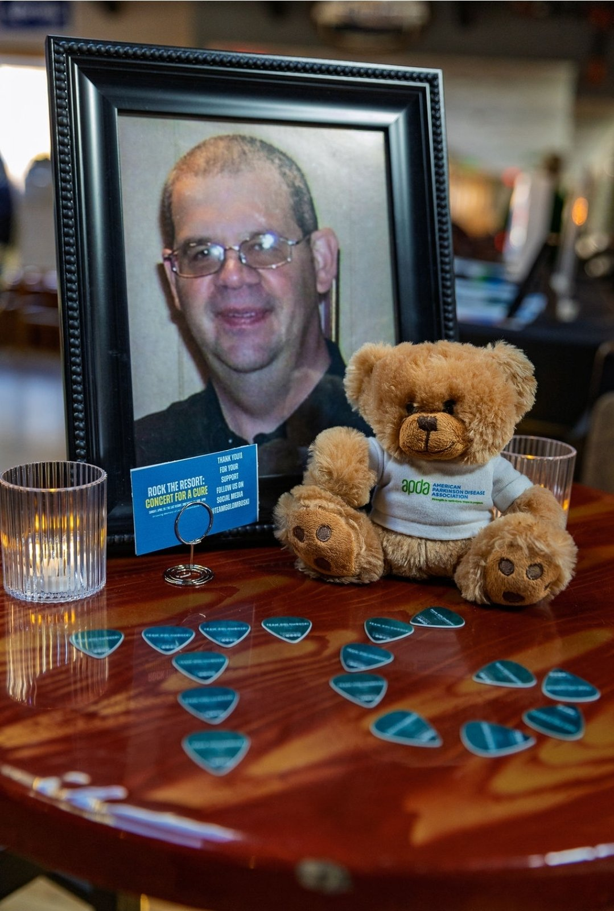
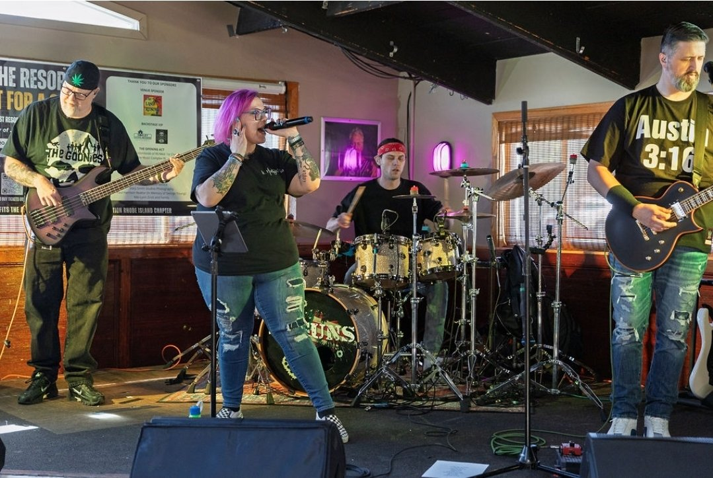
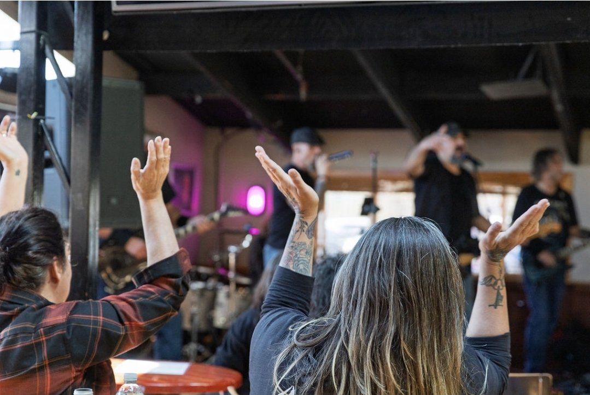
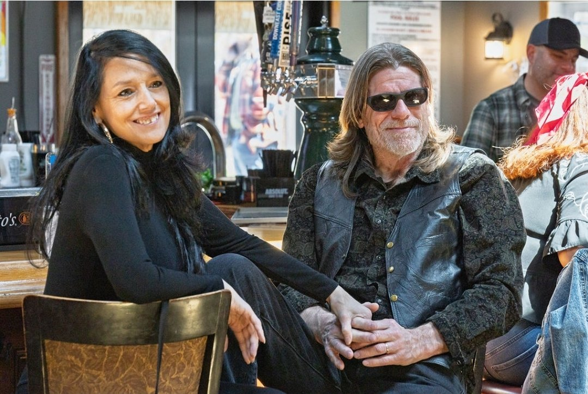
Rock the Resort Photo Gallery (2026)
Photos by Kurt Stickel Photography.
Official photographer of Team Golomboski
In memory of Joseph Golomboski Sr. A collection of the songs he loved and the local bands continuing his legacy at Rock the Resort.
Listen on SpotifyThe first Rock the Resort — Concert for a Cure was made possible by these local businesses and supporters. Thank you for standing with Rhode Island families living with Parkinson's.
Team Golomboski in the news and in pictures — press coverage of the team and the Rhode Island Parkinson's community, and photos from a decade of walks, concerts, and community events.
Press coverage of Team Golomboski, and photos from a decade of walks, concerts, and community events.
Team Golomboski in the press — led by the September 2025 Rocky Point Neighbors cover story, with coverage of the team, the walk, and the Rhode Island Parkinson's community.
The Golomboski family's story, told as a magazine cover story — followed by the archive of outlets that have covered Team Golomboski and its work.
Rocky Point Neighbors — Cover Story, September 2025
The September 2025 cover story of Rocky Point Neighbors tells the Golomboski family's story — Joseph and Kirby, the family behind Team Golomboski, and the work they do for Rhode Island families living with Parkinson's disease.
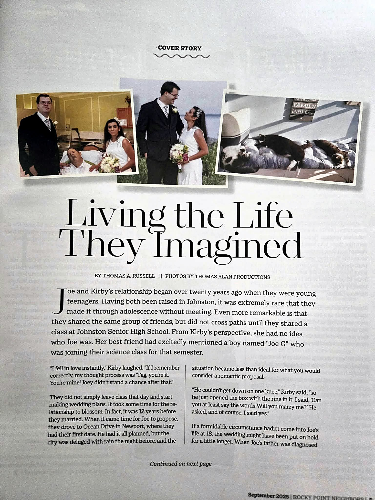
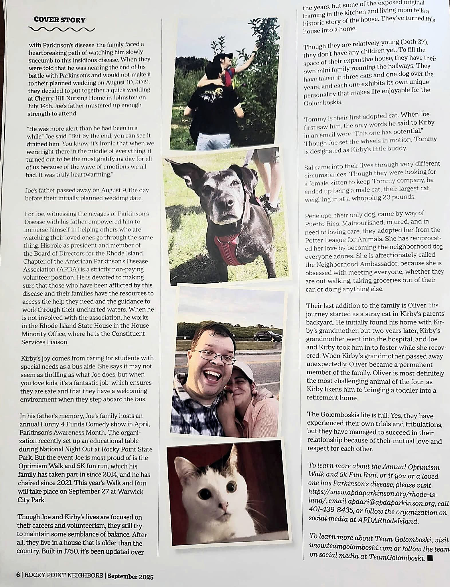
NBC 10 News (WJAR) · September 16, 2026. Barbara Morse reports on Cherry Hill Manor's remote Optimism Walk in Johnston and speaks with Joseph Golomboski, president of the APDA Rhode Island Chapter board, about how the money raised stays in Rhode Island for local programs.
Read the article →The Smithfield Times · April 2024 · Page 15. Joe Segal covers Team Golomboski's Funny 4 Funds comedy night — an evening of laughter raising funds for the APDA RI Chapter.
The Rhode Island Wave · September 2023. Joseph Golomboski Jr. and Sandi McLeod talk about the 25th Annual Rhode Island Optimism Walk & 5K Fun Run — September 16, 2023, at Warwick City Park — including their appearance on the paper's Spotlight Series. The story ran on page 13 and was teased on the issue's cover.
Watch the interview →Together for Sharon · July 2023. George Ackerman interviews Joseph about his father's early-onset diagnosis, founding Team Golomboski with Alicia in 2014, and standing strong for Rhode Island families living with Parkinson's.
Read the interview →Warwick Radio Online · September 2022. Warwick Life host Scott Nerney talks with Joseph Golomboski, Chair of the American Parkinson Disease Association Rhode Island Optimism Walk.
The Ernest Faison Show · Episode 30. Joseph joins Ernest Faison to talk about the Parkinson's Association and the work of Team Golomboski.
Watch the episode →Two Mikes Radio Show · 2021–2022. March 25, 2022 — 'Parkinson's Awareness April Fundraiser: Joe and Alicia Golomboski': Joe and Alicia remember their father and talk about their latest fundraiser for the APDA RI Chapter.
December 9, 2021 — 'Joe Golomboski is up for the Honey Dew Donuts Dew-Gooder award': Joseph talks about his Dew Good Awards nomination, which would benefit the APDA RI Chapter.
September 2, 2021 — 'Full show: Interviews with Joseph Golomboski': Joseph opens the show talking about the Optimism Walk at Goddard State Park on September 18 (his interview starts about 5 minutes in).
Johnston Sun Rise · August 9, 2017. An early profile of the team: Alicia and Joseph Jr. leading Team Golomboski into the September 2017 Optimism Walk at Goddard Park, with a basket raffle at Cherry Hill Manor toward their $2,017 goal.
Read the article →Our press kit has the boilerplate, key stats, leadership bios, and media contact in one place.
Open the Press KitPhotos from the days that built this team. Pick an event and look around — tap any photo to see it larger.
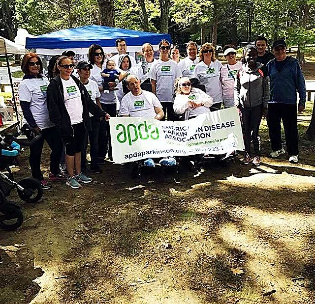
Warwick City Park · October 3, 2026
The Last Resort, Smithfield · April 26, 2026
Photos by Kurt Stickel Photography.
Warwick City Park · September 27, 2025
Photos by Kurt Stickel.
April 12, 2025
Quidnessett Country Club · June 1, 2024
Photos by Kurt Stickel Photography.
Smithfield Elks Lodge · May 11, 2024
Photos by Kurt Stickel Photography.
Warwick Knights of Columbus · April 15, 2023
Photos by Kurt Stickel Photography.
Quidnessett Country Club · June 5, 2023
Photos by Kurt Stickel Photography.
Goddard Memorial State Park · September 17, 2022
Photos by Kim Hartford and Glyn Morgan.
Quidnessett Country Club · June 6, 2022
Goddard Memorial State Park · September 18, 2021
Photos by Don't Blink Photography by Jill.
Rocky Point State Park · September 12, 2020
Photos from the Golomboski family collection.
Goddard Memorial State Park · September 7, 2019
Photos from the Golomboski family collection.
Goddard Memorial State Park · September 8, 2018
Warwick Neck, Warwick · June 29, 2019
Photos from the Golomboski family collection.
APDA RI Chapter Gala · May 3, 2019
Photos from the Golomboski family collection.
Goddard Memorial State Park · September 9, 2017
Photos from the Golomboski family collection.
Cherry Hill Manor, Johnston · August 2017
Photos from the Golomboski family collection.
McCoy Stadium, Pawtucket · August 13, 2017
Photos from the Golomboski family collection.
Cherry Hill Manor, Johnston · 2017
Photos from the Golomboski family collection.
Cherry Hill Manor, Johnston · 2016
Photos from the Golomboski family collection.
Goddard Memorial State Park · 2016
Photos from the Golomboski family collection.
Goddard Memorial State Park · 2014
Photos from the Golomboski family collection.
No albums match that filter right now.
Your gift through Team Golomboski goes to the APDA Rhode Island Chapter — and gets to work right here in Rhode Island.
Every dollar supports the programs, services, and research that Rhode Island families living with Parkinson's count on.
Support groups, education programs, and a local chapter families can call on — so no one in Rhode Island faces Parkinson's alone.
Movement is medicine. Your gift helps sustain programs like Rock Steady Boxing and yoga that help people with Parkinson's stay strong, mobile, and connected.
Parkinson's brings costs that insurance doesn't always cover. Your gift helps ease the financial weight on local families so they can focus on living well.
A share of every gift advances Parkinson's research — funding the science that brings better treatments, and one day a cure, within reach.
Give online through APDA RI's secure donation page:
Donate to APDA RIPrefer paper or a phone call? Both work — every route below reaches the APDA RI Chapter.
Make your check payable to the APDA Rhode Island Chapter and mail it to:
APDA Rhode IslandCall the APDA RI Chapter to make a donation by phone:
Questions about giving? The chapter can also be reached at apdari@apdaparkinson.org.
Newly diagnosed, living with Parkinson's, or caring for someone who is — start here. You are not alone.
Programs, news, financial help, and reading — pick a topic to get started.
Enter your ZIP code or town to see exercise classes and support groups close to home.
A diagnosis is the start of a plan, not the end of one — APDA's first steps for the days and weeks ahead.
ExploreWhen someone you love has Parkinson's, you live with it too — APDA's support and resources for care partners.
ExploreDiagnosed young — work, family, and support for people diagnosed between 21 and 50.
ExploreEnter your ZIP code or town to see exercise classes and support groups close to home.
ExploreThe latest from the American Parkinson Disease Association — research updates and news for the Parkinson's community.
ExploreFor needs beyond Parkinson's — aging, disability, and help at home — these Rhode Island resources are a good place to start.
ExploreAPDA's free educational booklets are a good place to start — plain-language guides on symptoms, treatment, exercise, and living well, free to read and download.
ExploreDoes Parkinson's run in families? What APDA says about heredity, risk, and genetic testing.
ExploreReal people, right here in Rhode Island. If you're not sure where to start, start with a phone call.
Program Director, APDA Rhode Island
For Parkinson's resources, support groups, and local referrals.
Call 401-591-7890
Email ftobar@apdaparkinson.org
Executive Director, APDA Rhode Island
Reach Michelle through the APDA RI chapter office:
Chapter office: 401-439-8435
Chapter email: apdari@apdaparkinson.org
For questions from anywhere, the APDA national helpline is 800-223-2732.
Call the APDA HelplineChapter mailing address: APDA RI, PO Box 114098, North Providence, RI 02911
Programs and services are subject to change. Please visit the American Parkinson's Disease Association Rhode Island Chapter's website for the latest information.
This page shares general information from American Parkinson Disease Association resources — it isn't medical advice. Questions about symptoms or treatment belong with your own doctor or neurologist.
Enter your ZIP code or town to see exercise classes and support groups close to home.
Enter your ZIP code or town to see exercise classes and support groups close to home.
Groups that meet on Zoom (online) always stay on the list — you can join those from anywhere.
APDA also offers free virtual exercise classes — yoga, boxing, dance, singing, and drumming — you can join from home.
Nothing matched that search — Rhode Island is small, so try a nearby town, or call Fatima Tobar at 401-591-7890 and she will point you to the closest program. Outside Rhode Island? Find your local chapter on the national APDA site.
The American Parkinson Disease Association serves families nationwide, with local chapters, programs, and virtual offerings wherever you live.
Visit the National APDA Site →APDA National Helpline: 800-223-2732
Maria Kishfy · 401-440-8136
See all exercise classes (APDA)Carolyn Kosiba-Quiterio · 401-203-5133
See all exercise classes (APDA)Wednesdays 1–2 PM · 401-743-6183
See all exercise classes (APDA)Kristin Matteson · 401-743-6183
See all exercise classes (APDA)Fitness assessment first · Maria Kishfy · 401-440-8136
See all exercise classes (APDA)Tue & Thu · 401-783-3900
See all exercise classes (APDA)Mon/Wed/Fri 12 PM · ontheropesri2019@gmail.com
See all exercise classes (APDA)Fridays 11 AM
See all exercise classes (APDA)Thursdays 10–11:15 AM, also on Zoom · Rachel Balaban · 401-261-7062
See all exercise classes (APDA)Tuesdays 4 PM · 401-245-2444
See all exercise classes (APDA)Mondays 11 AM–1 PM · 401-374-3715
See all exercise classes (APDA)Mondays 1–3 PM · 401-374-3715
See all exercise classes (APDA)Mondays 3:30 PM · 401-592-0400
See all exercise classes (APDA)Tue & Thu 11 AM
See all exercise classes (APDA)1st Wednesday 6:30 PM · Spaulding Rehabilitation Butler Campus · Geena Goyette · 401-886-4650
See all support groups (APDA)1st Thursday 10 AM · Facilitated by Fatima Tobar & Michelle Mach · ftobar@apdaparkinson.org
See all support groups (APDA)1st & 3rd Monday 5 PM · 401-415-4664
See all support groups (APDA)1st Thursday 1 PM
See all support groups (APDA)3rd Tuesday 1 PM · 401-228-1120
See all support groups (APDA)Contact ftobar@apdaparkinson.org
See all support groups (APDA)2nd Tuesday 10 AM · 401-591-7890
See all support groups (APDA)Every Tuesday 12–1 PM · 401-886-4650
See all support groups (APDA)Kristin Matteson · 401-743-6183
See all support groups (APDA)3rd Monday 1 PM · 401-247-1926
See all support groups (APDA)2nd Thursday 3 PM · 401-592-0400
See all support groups (APDA)Schedules and sign-ups are on the APDA RI website.
Be Active & Beyond — APDA's illustrated exercise & wellness guide (free from APDA)
The latest from the American Parkinson Disease Association — research updates and news for the Parkinson's community.
The latest from the American Parkinson Disease Association — research updates and news for the Parkinson's community.
The US Food and Drug Administration (FDA) has approved JUVMO (tavapadon) for PD treatment in adults.
Key takeaways from the second Advisory Council on Parkinson's Research, Care, and Services, and ways to inform the National Plan to End Parkinson's.
Momentum builds to end paraquat use and protect the Parkinson's community.
A Closer Look is APDA's doctor blog series, where Dr. Rebecca Gilbert answers everyday Parkinson's questions in plain language.
For needs beyond Parkinson's — aging, disability, and help at home — these Rhode Island resources are a good place to start.
For needs beyond Parkinson's — aging, disability, and help at home — these Rhode Island resources are a good place to start. For anything Parkinson's, start with APDA RI above.
Team Golomboski's home organization is the American Parkinson Disease Association — start there.
Our home organization: research funding, education, and support for the Parkinson's community nationwide.
Our local chapter: Rhode Island support groups, exercise and wellness classes, programs, and referrals.
For national research news and background reading, these organizations also publish helpful material:
The Michael J. Fox Foundation · Parkinson's Foundation · Davis Phinney Foundation · Brian Grant Foundation · PMD Alliance
For anything local — support groups, exercise programs, education, or help — APDA RI is the place, and the chapter contacts are right here on this page.
APDA's free educational booklets are a good place to start — plain-language guides on symptoms, treatment, exercise, and living well, free to read and download.
APDA's free educational booklets are a good place to start — plain-language guides on symptoms, treatment, exercise, and living well, free to read and download.
APDA's free booklets, standing on the shelf — tap a cover to get yours from APDA.
Books our community has found helpful.
A bold plan to prevent, treat, and end Parkinson's, from four leading experts.
A practical manual for living well with Parkinson's, from the Davis Phinney Foundation.
A plain-language primer for the newly diagnosed and their families.
Everyday guidance on living well, from a leading movement-disorders neurologist.
A son's memoir of caring for his mother, Sharon, through her 15-year Parkinson's battle, written in her memory after she passed in 2020.
George founded Together for Sharon in her memory — and interviewed Joseph about our family's story in July 2023.
A journalist's investigation into Parkinson's science and the search for a cure.
A first-person guide for people diagnosed young, and the families beside them.
Michael J. Fox's memoir of optimism, gratitude, and mortality.
Know a Parkinson's book that belongs on this list? Our Suggest a Book form is open to any author or publisher with a Parkinson's book to suggest, and every suggestion is reviewed by Team Golomboski. Authors and publishers who send a complimentary review copy get more in return: a featured placement on this page and a mention to our community. Suggesting a book is not a guarantee it will be listed.
A Parkinson's diagnosis is the start of a plan, not the end of one. Here are APDA's first steps, its free booklets, and the Rhode Island people ready to help you take them.
This page shares general information from American Parkinson Disease Association resources — it isn't medical advice. Questions about symptoms or treatment belong with your own doctor or neurologist.
APDA's guidance for the days and weeks ahead — you don't have to do all of it at once.
A new diagnosis comes with a lot of questions, and it's normal to feel overwhelmed at first. APDA's booklet Living Well With Parkinson's Disease makes a hopeful point: Parkinson's is progressive, yet most people with Parkinson's can live well for many years with a good care management plan — and there are steps you can take right away to strengthen your body and mind. APDA sums them up as ten things you can do now:
APDA walks through each step in the free booklet Living Well With Parkinson's Disease — 10 Things You Can Do Now! (PDF).
APDA's free educational booklets are a good place to start — plain-language guides on symptoms, treatment, exercise, and living well, free to read and download.
Prefer to browse first? Our Recommended Reading page starts with these booklets and adds books our community has found helpful.
Two free APDA fact sheets to start with:
PRESS is an APDA signature program, offered free of charge. Schedules and sign-ups are on the APDA Rhode Island website, and APDA describes all of its signature programs here.
Exercise classes and support groups meet all over Rhode Island — and they are some of the best first steps there are.
Search by ZIP code or town on our Programs & Support Groups page to see what's near you, including virtual programs you can join from home.
Real people, right here in Rhode Island. If you're not sure where to start, start with a phone call.
Program Director, APDA Rhode Island
For Parkinson's resources, support groups, and local referrals.
Call 401-591-7890
Email ftobar@apdaparkinson.org
Executive Director, APDA Rhode Island
Reach Michelle through the APDA RI chapter office:
Chapter office: 401-439-8435
Chapter email: apdari@apdaparkinson.org
For questions from anywhere, the APDA national helpline is 800-223-2732.
Call the APDA HelplineChapter mailing address: APDA RI, PO Box 114098, North Providence, RI 02911
This page shares general information from American Parkinson Disease Association resources — it isn't medical advice. Questions about symptoms or treatment belong with your own doctor or neurologist.
When someone you love has Parkinson's, you live with it too. Here is APDA's guidance for care partners — and Rhode Island support that starts with a group led by our own chapter.
This page shares general information from American Parkinson Disease Association resources — it isn't medical advice. Questions about symptoms or treatment belong with your own doctor or neurologist.
APDA's guidance for keeping yourself — and your relationship — healthy and balanced.
When one person in a couple or family is affected by Parkinson's, everyone close to them lives with it as well. APDA's advice for care partners starts with looking after the person doing the caring:
APDA's full page for care partners is Resources for Care Partners at APDA.
Schedules and sign-ups are on the APDA Rhode Island website. Looking for more groups? Our Programs & Support Groups page lists every Rhode Island support group by town, including groups that meet on Zoom from anywhere.
When one person in a family lives with Parkinson's, the whole family lives with it too. Care partners deserve breaks, outside interests of their own, and people they can turn to — these APDA resources are gathered with that in mind.
These resources come from APDA's Resources for Care Partners page. And if you can't find what you're looking for, APDA invites you to call the national helpline at 800-223-2732 or email apda@apdaparkinson.org for referrals and information.
Real people, right here in Rhode Island. If you're not sure where to start, start with a phone call.
Program Director, APDA Rhode Island
For Parkinson's resources, support groups, and local referrals.
Call 401-591-7890
Email ftobar@apdaparkinson.org
Executive Director, APDA Rhode Island
Reach Michelle through the APDA RI chapter office:
Chapter office: 401-439-8435
Chapter email: apdari@apdaparkinson.org
For questions from anywhere, the APDA national helpline is 800-223-2732.
Call the APDA HelplineChapter mailing address: APDA RI, PO Box 114098, North Providence, RI 02911
This page shares general information from American Parkinson Disease Association resources — it isn't medical advice. Questions about symptoms or treatment belong with your own doctor or neurologist.
Parkinson's diagnosed between 21 and 50 is called young onset — and it comes with its own questions about work, family, and the years ahead. Here is APDA's guidance, and Rhode Island support close to home.
Our dad, Joseph Golomboski Sr., was diagnosed with early-onset Parkinson's at 44 — so young onset is personal for this family.
This page shares general information from American Parkinson Disease Association resources — it isn't medical advice. Questions about symptoms or treatment belong with your own doctor or neurologist.
APDA's picture of young onset — what it is, and how it tends to differ.
When Parkinson's is diagnosed between the ages of 21 and 50, APDA calls it young onset Parkinson's — also called early onset Parkinson's. It accounts for about 10% of all Parkinson's cases. Younger people often face a different set of concerns — work and career, parenting, dating and relationships — and the disease typically follows a slower course, with fewer cognitive issues.
The basics are the same at any age. APDA describes Parkinson's this way:
APDA explains the basics on its What is Parkinson's Disease page.
Read APDA's full guidance: Early-Onset Parkinson's Disease and Young Onset Parkinson's Disease.
Be Active & Beyond — APDA's illustrated exercise & wellness guide (free from APDA)
Resources for parents, children, and teens — and a Rhode Island group made for people diagnosed young.
Find this group and every other Rhode Island program on our Programs & Support Groups page — search by ZIP code or town to see what's near you.
Real people, right here in Rhode Island. If you're not sure where to start, start with a phone call.
Program Director, APDA Rhode Island
For Parkinson's resources, support groups, and local referrals.
Call 401-591-7890
Email ftobar@apdaparkinson.org
Executive Director, APDA Rhode Island
Reach Michelle through the APDA RI chapter office:
Chapter office: 401-439-8435
Chapter email: apdari@apdaparkinson.org
For questions from anywhere, the APDA national helpline is 800-223-2732.
Call the APDA HelplineChapter mailing address: APDA RI, PO Box 114098, North Providence, RI 02911
This page shares general information from American Parkinson Disease Association resources — it isn't medical advice. Questions about symptoms or treatment belong with your own doctor or neurologist.
Does Parkinson's run in families? Here is what APDA wants families to know about heredity, risk, and genetic testing — in plain language.
This page shares general information from American Parkinson Disease Association resources — it isn't medical advice. Questions about symptoms or treatment belong with your own doctor or neurologist.
This question is personal for our family — our dad, Joseph Golomboski Sr., was diagnosed with early-onset Parkinson's at 44, so 'does it run in the family?' is one we've asked ourselves. Here's what APDA wants families to know:
When a parent has Parkinson's, it's natural for sons and daughters to wonder about their own risk. In most cases, Parkinson's is not directly inherited. APDA notes that about 10%–15% of people with Parkinson's carry an inherited genetic mutation known to increase PD risk — and most people with Parkinson's, even with a family history, do not carry one of these abnormal genes. Even when a mutation is present, it raises risk rather than deciding the outcome: many people who carry one never develop the disease. So a parent having Parkinson's does not mean a child will get it, and families thinking about genetic testing should talk it through with a neurologist or a genetic counselor first.
APDA on genetic testing for Parkinson's
See the risk-factors panel in APDA's PD Overview fact sheet (PDF)
Real people, right here in Rhode Island. If you're not sure where to start, start with a phone call.
Program Director, APDA Rhode Island
For Parkinson's resources, support groups, and local referrals.
Call 401-591-7890
Email ftobar@apdaparkinson.org
Executive Director, APDA Rhode Island
Reach Michelle through the APDA RI chapter office:
Chapter office: 401-439-8435
Chapter email: apdari@apdaparkinson.org
For questions from anywhere, the APDA national helpline is 800-223-2732.
Call the APDA HelplineChapter mailing address: APDA RI, PO Box 114098, North Providence, RI 02911
This page shares general information from American Parkinson Disease Association resources — it isn't medical advice. Questions about symptoms or treatment belong with your own doctor or neurologist.
New to Parkinson's? Start here — what it is, what the symptoms look like, and the questions worth asking, all in plain language.
Parkinson's disease is a progressive condition of the brain and nervous system. It happens when brain cells that make dopamine — a chemical messenger that helps control movement — gradually break down.
As dopamine falls, movement slows and stiffens, and other symptoms can appear over time. The changes usually begin gradually, and they look different from person to person.
Parkinson's is diagnosed with a clinical exam by a neurologist — often a movement-disorder specialist — based on your history and symptoms. There is no cure yet, but there are treatments, therapies, and a community that helps people live well with it: medications that ease symptoms, exercise that keeps people moving, and physical, speech, and occupational therapies for daily life.
Parkinson's is best known for how it affects movement — but it doesn't stop there. Not everyone gets all of these; symptoms vary from person to person.
These four are the cardinal signs doctors look for first.
Non-motor symptoms are part of Parkinson's too — some appear years before movement changes.
Parkinson's can start young. Doctors call it young onset when symptoms begin between ages 21 and 50 — about 10% of cases. Our dad, Joseph Golomboski Sr., was diagnosed at 44.
Most Parkinson's isn't inherited — only about 10% to 15% of cases trace to a known genetic mutation. In most cases, Parkinson's is not passed directly from parent to child: most people with Parkinson's, even with a family history, do not carry one of these genes. And even when a mutation is present, it raises risk rather than deciding the outcome — many people who carry one never develop the disease. A parent having Parkinson's does not mean a child will get it.
Read more: APDA on genetic testing for Parkinson's
Doctors often describe Parkinson's in five stages (the Hoehn & Yahr scale). Treat them as a general picture, not a prediction — progression varies widely from person to person, and many people never reach the later stages.
A new diagnosis can make your mind go blank in the exam room. Bring this list — and write down the answers.
You don't have to figure this out alone — that's exactly why our family started Team Golomboski. APDA Rhode Island has real people, close to home, who answer the phone. APDA's Parkinson's Basics explains the condition in depth. And our Books page gathers the guides other families have leaned on.
This page shares general information from American Parkinson Disease Association resources — it isn't medical advice. Questions about symptoms or treatment belong with your own doctor or neurologist.
Everything a reporter, producer, or partner needs: who Team Golomboski is, the numbers that back it up, and who to contact.
Boilerplate — please feel free to use as written.
Team Golomboski is a family-led fundraising team based in Warwick, Rhode Island, founded in 2014 by siblings Joseph Golomboski Jr. and Alicia Golomboski in honor of their father, Joseph P. Golomboski Sr., who was diagnosed with early-onset Parkinson's disease at age 44 and passed away in 2019. The team supports the APDA RI Chapter and has raised over $40,000 since 2014 for local programs, support services, exercise and wellness programs, and research toward a cure.
Team Captain · President, APDA RI Board of Directors · Walk Committee Chair
Joseph Golomboski Jr. co-founded Team Golomboski in 2014 with his sister Alicia, in honor of their father. He captains the team, chairs the Rhode Island Optimism Walk committee, and serves as President of the APDA RI Chapter's Board of Directors.
Co-Founder · APDA RI Board Member
Alicia Golomboski co-founded Team Golomboski in 2014 with her brother Joseph, in honor of their father. She serves on the APDA RI Chapter's Board of Directors and helps lead the team's fundraising.
Team photos, walk-day images, and logos are available on request — email the media contact above and we'll send what you need for your story or segment.
For past coverage, see the In the News archive.
Browse event photos in our Photo Galleries.
Team Golomboski
Email: teamgolomboski@gmail.com
Phone: (401) 258-4957
Speaking: invite Joseph to speak to your group or organization via the Speaking page.
Book Joseph Golomboski to speak — on caregiving, community fundraising, and living with Parkinson’s in the family.
Joseph Golomboski — Parkinson’s advocate, family caregiver, and community fundraiser.
President, APDA Rhode Island Chapter Board since September 2024 · Co-founder and Team Captain, Team Golomboski · Chair, RI Optimism Walk Committee since 2021.
Joseph’s father, Joseph P. Golomboski Sr., was diagnosed with early-onset Parkinson’s at 44. Joseph and his sister Alicia helped carry his care from their late teens onward. In 2014 they founded Team Golomboski in their father’s honor, and have walked in his memory since his passing in 2019. What began as a family team now anchors the Rhode Island Parkinson’s community’s largest fundraising day.
Caregiver and support groups · Senior centers · Healthcare and community organizations · Community and civic groups · Employers and senior living communities — speaking on real-life caregiving, keeping dignity at work, and how teams can support families living with Parkinson’s.
To invite Joseph to speak, write to teamgolomboski@gmail.com or call (401) 258-4957.
Every page on the Team Golomboski site, in one place — the team's story and events, and recommended reading for Rhode Island Parkinson's families.